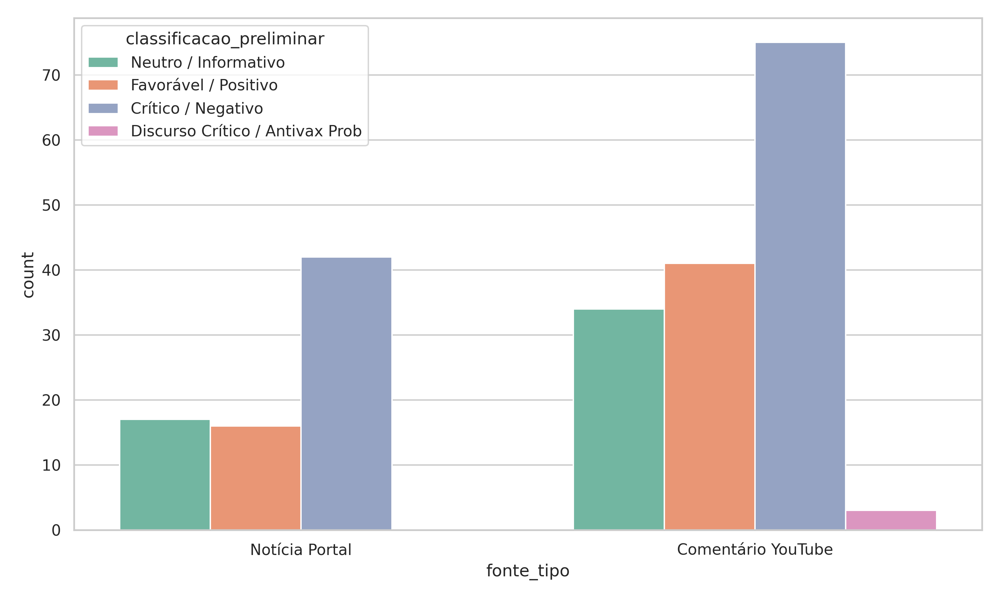
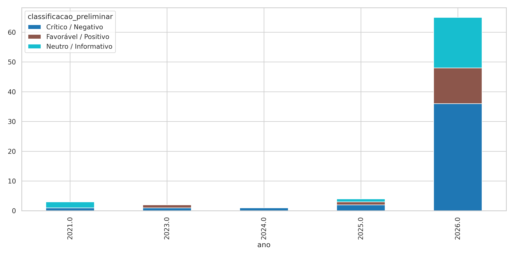
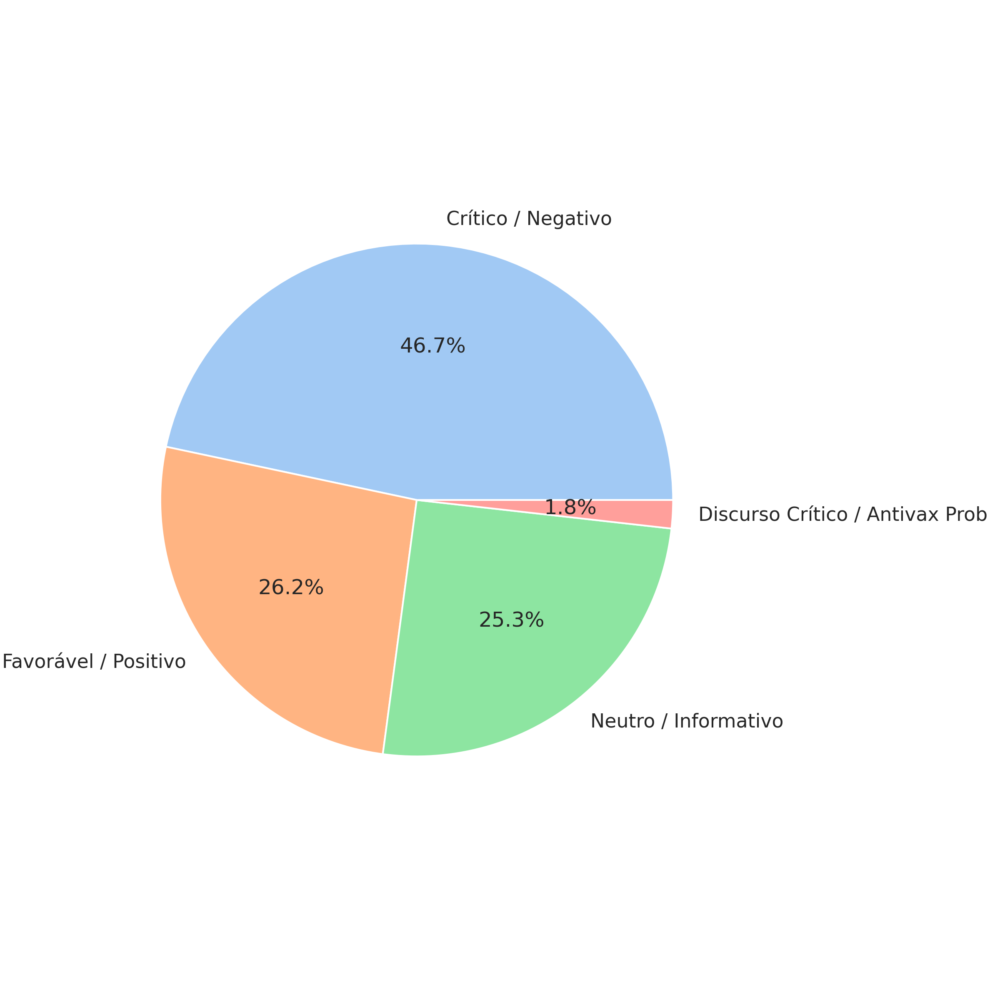

O conjunto de notícias destaca a mobilização para campanhas locais de vacinação humana e animal (poliomielite no DF e antirrábica em Campo Grande). Registra avanços e metas de cobertura atingidas em municípios específicos, como Palmas (95% para pólio) e São José. Aponta o alerta epidemiológico sobre a baixa cobertura vacinal contra o sarampo e o risco de surtos no país.
Os pontos negativos centralizam-se na baixa cobertura vacinal (covid infantil, sarampo e pólio) motivada por desinformação. Destacam-se também falhas de comunicação governamental que geraram dúvidas na população (caso da Pneumo 20) e denúncias de fraudes e irregularidades financeiras na compra de imunizantes.



Vacinação antirrábica atende região do Nova Campo Grande neste sábado – CGNotícias - Prefeitura de Campo Grande
Sábado tem vacinação antirrábica gratuita para cães e gatos em Campo Grande; veja local e horário - G1
Sarampo: nenhum estado brasileiro atinge meta de vacinação e surtos em países vizinhos preocupam - G1
MS tem 24 casos suspeitos de sarampo e 1 em investigação - Campo Grande News
São José é destaque na imunização em 2026 com prêmios, avanços na vacinação e coberturas acima das metas - Prefeitura Municipal De São José
Flávio Bolsonaro participou de festa em lancha com prostitutas e lobistas na pandemia, revela revista - CartaCapital
Dia Mundial de Combate à Poliomielite: DF faz campanha de vacinação neste sábado; veja onde se vacinar - G1
Baixa cobertura vacinal mantém Brasil em alerta para o sarampo - Correio Braziliense
Palmas atinge meta de 95% de cobertura vacinal contra poliomielite em 2026 - Prefeitura de Palmas.
Nenhum estado atinge meta de vacinação contra Sarampo e surtos vizinhos ameaçam o Brasil - UOL
Como funciona a vacina contra o câncer que reduz risco de recidiva ou morte por melanoma - Folha de S.Paulo
Vacina de mRNA contra câncer reduz em 42% risco de morte ou volta do melanoma - G1
‘Um avanço histórico’: vacina personalizada reduz recorrência de câncer de pele agressivo em 42% - VEJA
Poliomielite: especialistas alertam para queda na taxa de vacinação contra a doença no Brasil - A Tribuna
Dia Mundial da Poliomielite: entenda os principais riscos da doença e como se prevenir - Terra
Vacina contra o câncer tem resultado promissor e pode chegar ao mercado em 2027 - InfoMoney
Opinião - Marcelo Leite: Vacina para câncer de pele renova fé na genômica - Folha de S.Paulo
Mimoso realiza Dia D de Vacinação contra raiva neste sábado - Aqui Notícias
Sergipe reforça importância da vacinação contra poliomielite no Dia Mundial de Combate à doença - Secretaria de Estado da Saúde
Setor de Imunização participa da 3ª Meia Maratona contra a Pólio e vacina 52 pessoas contra a gripe - Prefeitura Três Lagoas